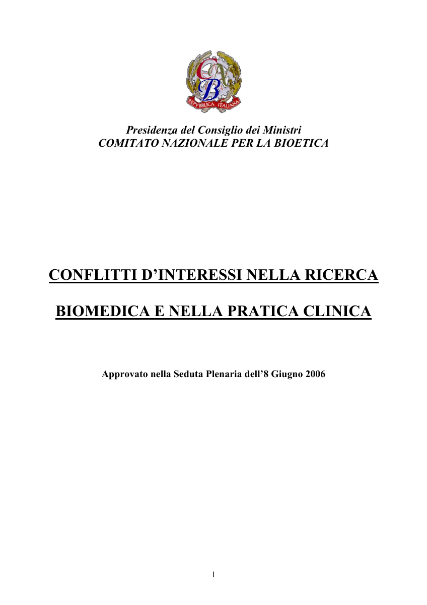
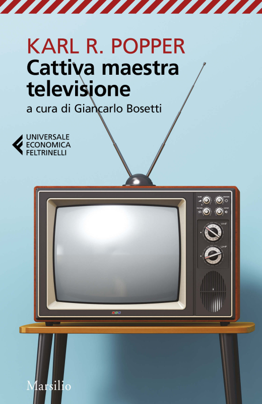

1:14:57 · 21 OPERE
La libertà beffata in nome di una crisi.
Il filo del discorso
L’intervistatore presenta espressamente Dr Divago e gli propone un confronto su libertà, informazione e crisi democratica a due anni dall’inizio della pandemia. Il libro centrale è Beffe e beffatori in nome di una crisi, illustrato e discusso attraverso domande e letture; La società del contrario offre un precedente sulla cultura di massa. Dr Divago descrive questi lavori come testi di servizio: interventi che preferirebbe non dover scrivere, ma che ritiene necessari per rendere possibile un’alternativa al discorso dominante. Il richiamo a un intervento di Bonelli del 14 marzo 2022 colloca la conversazione dopo quella data, senza stabilire il giorno preciso dell’incontro. La diagnosi sociale proposta dai due interlocutori lega riduzione del pluralismo, potere economico, neoliberismo e perdita di autonomia del cittadino. Dr Divago contrappone la molteplicità dei racconti politici del dopoguerra alla tendenza verso un pensiero unico, richiamando Ramonet. L’intervistatore legge l’articolo 21 della Costituzione e denuncia il timore della moderazione algoritmica, spiegando l’uso di parole allusive per parlare di vaccini e pandemia. Si tratta delle loro valutazioni: non vengono prodotti un provvedimento di rimozione o una dimostrazione della proprietà di tutta la stampa mondiale da parte di cinque gruppi. La ricerca editoriale che presenta il noto numero di cinque grandi conglomerati riguarda un determinato assetto dei media statunitensi; non basta per una conclusione universale e permanente sul mondo. Il ruolo della scuola occupa il primo sviluppo dell’intervista. Dr Divago sostiene che un’educazione fondata sulla convalida dell’autorità renda più facile accettare narrazioni esterne e meno naturale esercitare il proprio intelletto. L’appello kantiano all’autonomia e il riferimento alla televisione cattiva maestra servono a contestare l’equivalenza fra titolo di studio e capacità critica. La tesi rimane una lettura sociale, non un risultato sperimentale che dimostri la maggiore manipolabilità di ogni persona istruita. Riconoscere il diritto di porre domande non rende inoltre intercambiabili una competenza specialistica, un’osservazione personale e una prova controllata. Le letture di Huizinga e Schweitzer introducono il tema della responsabilità culturale. L’intervistatore vede nei loro avvertimenti sul declino della civiltà indicazioni ancora utili, mentre Dr Divago li chiama profeti laici. La previsione è intesa come attenzione ai rischi e alle conseguenze, non come dimostrazione che ogni evento successivo realizzi un’unica trama. Il dialogo dei Meli in Tucidide e la discussione di Trasimaco nella Repubblica permettono di contrapporre giustizia e forza: la tesi dell’utile del più forte appartiene a un interlocutore che il dialogo sottopone a critica. Il successivo richiamo al popolo americano distingue, sul piano documentario, la Dichiarazione del 1776 dal preambolo della Costituzione del 1787, dove compare We the People; non prova che prima di quella data non esistesse alcun concetto di popolo. La parte filosofica associa razionalità, bene, bellezza e rispetto della persona. La reverenza per la vita di Schweitzer e il fine in sé kantiano sono usati contro la riduzione dei rapporti umani a un calcolo di utilità. L’Etica di Spinoza e la Genesi entrano nella critica del soggetto che vorrebbe determinare da sé tutto il reale. Sono letture di Dr Divago, da distinguere dai testi: il serpente promette la conoscenza del bene e del male, mentre l’identificazione delle dottrine religiose attuali con quell’insegnamento è un giudizio teologico del relatore. Un aneddoto sull’attrattiva estetica delle equazioni non rende la bellezza una verifica empirica di una teoria fisica. Le affermazioni sanitarie richiedono alcune distinzioni. Il numero del 97 per cento viene richiamato senza data e denominatore: sopravvivere, risultare guarito e non avere conseguenze cliniche non sono la stessa misura, e un’alta quota di sopravvivenza non dimostra da sola l’assenza di un’emergenza. SARS-CoV-2 è un coronavirus distinto dai virus influenzali. Anche l’assenza di sintomi non equivale necessariamente all’assenza d’infezione: persone infette presintomatiche o asintomatiche possono trasmettere il virus. Questo corregge un’affermazione generale dell’intervistatore senza stabilire automaticamente la proporzionalità di ogni misura adottata. Gli articoli 16 e 32 della Costituzione considerano salute e limiti di legge insieme alla libertà e al rispetto della persona. La qualificazione politica di una misura non discende dal solo contrasto fra paura e libertà. Il documento sui conflitti d’interesse citato nell’apertura è un parere del Comitato Nazionale per la Bioetica del 2006, non una relazione parlamentare. Esamina un problema reale di trasparenza e indipendenza, ma distingue la condizione di conflitto da un comportamento scorretto: non dimostra che l’intera ricerca o ogni medico siano corrotti. Allo stesso modo, le espressioni psichiatriche e le metafore di malattia usate dai parlanti non sono diagnosi della popolazione o dei governanti. Il richiamo al video di Bonelli rimane una testimonianza riferita, senza trasformare l’autorità di uno psichiatra in prova di una patologia collettiva. Nella parte finale l’intervistatore chiede come il dissenso possa organizzarsi senza ripetere la stessa polarizzazione che contesta. Dr Divago distingue obiettivi politici di ampia comunicazione e autonomia del discorso culturale, usando la metafora delle squadre che si affrontano sul medesimo campo. Fromm e Meerloo forniscono riferimenti per parlare di conformismo, linguaggio e persuasione; il rischio è che etichette, attacchi personali e appartenenze sostituiscano le ragioni. Il libro viene allora proposto come spazio di un discorso che non segua soltanto l’agenda del momento. La conclusione affida alla lettura, alla solidarietà e al valore delle piccole azioni una possibilità di risposta, conservando il dissenso politico senza trasformarlo in una prescrizione sanitaria o in una garanzia di esito.
I libri nel discorso

Costituzione della Repubblica Italiana
Copertina dell’edizione Intra aggiornata al 2023: Intra · 2023 · introduzione di Umberto Vincenti
Copertina autentica del testo integrale, aggiornata alla legge costituzionale 26 settembre 2023 n.1. È successiva al filmato del 2019 e non rappresenta la versione storica letta dal relatore. Umberto Vincenti firma l’introduzione. I tentativi di acquisire PDF istituzionali hanno restituito HTTP 403: nessun PDF o frontespizio è simulato come scaricato.
riconoscimento_vocale_locale
Passaggio 2:20 ↗ · Fonti e libro ↗
Conflitti d’interessi nella ricerca biomedica e nella pratica clinica
Identificazione probabile
Copertina: Parere CNB approvato l’8 giugno 2006, frontespizio del PDF ufficiale, pagina 1 di 17
Frontespizio autentico del documento ufficiale della Presidenza del Consiglio/CNB: titolo, ente, stemma e data 8 giugno 2006 leggibili. Pagina originale resa dal PDF in PNG, non copertina commerciale, non una relazione del Parlamento né ricostruzione grafica.
riconoscimento_vocale_locale
Passaggio 3:17 ↗ · Fonti e libro ↗
La società del contrario
Copertina: Zambon · 2005
Copertina autentica dell’edizione di riferimento, controllata visivamente. Non identifica l’esemplare letto o citato nel video.
riconoscimento_vocale_locale
Passaggio 6:44 ↗ · Fonti e libro ↗
Beffe e beffatori in nome di una crisi
Copertina: Lulu, 2021
riconoscimento_vocale_locale
Passaggio 8:46 ↗ · Fonti e libro ↗
La pensée unique (Il pensiero unico)
Prima pagina: Prima pagina del numero originale · gennaio 1995
È la prima pagina del periodico che contiene l’editoriale, non la copertina di un libro autonomo.
riconoscimento_vocale_locale
Passaggio 14:49 ↗ · Fonti e libro ↗
Risposta alla domanda: che cos’è l’Illuminismo?
Identificazione probabile
Copertina della raccolta che comprende il saggio sull’Illuminismo: Firenze University Press · Sette scritti politici liberi · 2011 · a cura di Maria Chiara Pievatolo
Copertina del volume cartaceo FUP che comprende il saggio, riscontrato dal catalogo universitario. L’ISBN appartiene alla raccolta; il filmato non annuncia un’edizione e il titolo del saggio è un’identificazione probabile della citazione.
riconoscimento_vocale_locale
Passaggio 21:47 ↗ · Fonti e libro ↗
Cattiva maestra televisione
Identificazione probabile
Copertina: Marsilio / Universale economica Feltrinelli, 2019, 128 pagine; a cura di Giancarlo Bosetti; ISBN 9788829702923.
Copertina autentica dell’edizione ampliata del 2019. La prima raccolta italiana di Popper e John Condry risale al 1994; la tiratura illustrata non è attribuita al video.
riconoscimento_vocale_locale
Passaggio 22:32 ↗ · Fonti e libro ↗
Malleus Maleficarum (Il martello delle streghe)
Copertina: The Hammer of Witches: A Complete Translation of the Malleus Maleficarum, traduzione di Christopher S. Mackay, Cambridge University Press, paperback 2009, 664 pagine; ISBN 9780521747875.
Copertina autentica della traduzione commentata inglese Cambridge 2009, nella quale Christopher S. Mackay è il traduttore e studioso dell’opera. Il nome in copertina non viene scambiato con quello dell’autore medievale; nessuna edizione è attribuita al video.
riconoscimento_vocale_locale
Passaggio 24:21 ↗ · Fonti e libro ↗
1984
Copertina: Newton Compton · edizione illustrativa
riconoscimento_vocale_locale
Passaggio 26:35 ↗ · Fonti e libro ↗
La crisi della civiltà / In the Shadow of Tomorrow (In de schaduwen van morgen)
Copertina: IWP Books · ristampa inglese 2023
Copertina anteriore autentica della ristampa IWP 2023, estratta geometricamente dal PDF editoriale della copertina estesa, seguendo i segni di taglio. Titolo, autore e marchio IWP sono interi: nessuna ricostruzione o ritocco del testo. Il colophon del volume dichiara Isaac Waisberg, typesetter, 2023. Non è una copertina del 1936 e non si attribuisce alla copia del video; nessun ISBN inventato.
riconoscimento_vocale_locale
Passaggio 27:27 ↗ · Fonti e libro ↗
Filosofia della civiltà (The Philosophy of Civilization / Kulturphilosophie)
Identificazione probabile
Copertina della raccolta completa The Philosophy of Civilization: Prometheus · The Philosophy of Civilization · 1987 · ISBN9780879754037
Riutilizzata la copertina autentica dell’intera raccolta Prometheus già associata ai suoi due saggi nel repertorio. Non è la copertina della sola parte; non è la copertina Fazi e non identifica la specifica copia italiana citata. La raccolta è un contenitore editoriale, non una terza opera autonoma di Schweitzer distinta dai due testi.
riconoscimento_vocale_locale
Passaggio 32:53 ↗ · Fonti e libro ↗
La guerra del Peloponneso
Copertina: Einaudi-Gallimard · Biblioteca della Pléiade · 1997
Copertina autentica controllata visivamente. Edizione di riferimento, non identificata come quella usata nel video.
riconoscimento_vocale_locale
Passaggio 34:12 ↗ · Fonti e libro ↗
La Repubblica
Copertina: Laterza · La Repubblica · edizione con testo a fronte di riferimento
Immagine associata all’ISBN di riferimento e controllata visivamente; edizione e traduzione non identificate come quelle citate o lette nel video.
riconoscimento_vocale_locale
Passaggio 36:57 ↗ · Fonti e libro ↗
Genesi
Copertina: Einaudi, I libri della Bibbia / Einaudi Tascabili, 2000; introduzione di Steven Rose
Copertina dell’edizione autonoma Genesi, nella serie I libri della Bibbia, con introduzione di Steven Rose. Edizione scelta come riferimento iconografico; nessuna edizione è confermata nel video.
riconoscimento_vocale_locale
Passaggio 44:51 ↗ · Fonti e libro ↗
Etica
Identificazione probabile
Copertina: Laterza · Biblioteca Filosofica · 2009 · traduzione di Sergio Landucci
Immagine autentica dell’opera, controllata visivamente; l’edizione di riferimento non è attribuita al filmato.
riconoscimento_vocale_locale
Passaggio 45:33 ↗ · Fonti e libro ↗
Dichiarazione d’indipendenza degli Stati Uniti d’America
Facsimile: incisione di Stone del 1823: Documento del 4 luglio 1776 · incisione di William J. Stone del 1823
Riproduzione documentaria dell’incisione di Stone del 1823 conservata dai National Archives. Non è la pergamena originale del 1776, né la copertina di un libro.
riconoscimento_vocale_locale
Passaggio 50:05 ↗ · Fonti e libro ↗
Costituzione degli Stati Uniti d’America
Copertina della raccolta: Testo firmato il17settembre1787. Per l’immagine si usa la raccolta Penguin Classics The Federalist Papers, ISBN9780140444957, che dichiara di includere il testo della Costituzione; non è una fotografia della pergamena originaria.
Copertina autentica di The Federalist Papers: la descrizione editoriale attesta che la raccolta comprende il testo completo della Costituzione. Non è il frontespizio costituzionale del1787 e Hamilton, Madison e Jay non sono presentati come unici autori del documento.
riconoscimento_vocale_locale
Passaggio 50:27 ↗ · Fonti e libro ↗
Fondazione della metafisica dei costumi
Identificazione probabile
Copertina: Laterza · Economica Laterza 122 · Filippo Gonnelli, edizione 1997 e ristampe
Immagine autentica dell’opera, controllata visivamente; l’edizione di riferimento non è attribuita al filmato.
riconoscimento_vocale_locale
Passaggio 52:56 ↗ · Fonti e libro ↗
Psicanalisi della società contemporanea (The Sane Society)
Identificazione probabile
Copertina: Copertina inglese The Sane Society, Routledge Classics, 2002, seconda edizione, 424 pagine nel catalogo editoriale, ISBN 9780415270984. Originale Rinehart 1955; prima edizione italiana Edizioni di Comunità 1960. Il 1964 pronunciato nel video può indicare una successiva edizione italiana.
Copertina autentica Routledge, tessitura verde e banda rossa con Fromm e titolo inglese. L’indice identifica il tema in Can a Society be Sick? The Pathology of Normalcy. La copertina inglese del 2002 non è attribuita all’edizione italiana del 1964. Il segnaposto IBS della diversa edizione Mondadori è stato respinto e documentato, mai esportato.
riconoscimento_vocale_locale
Passaggio 1:02:26 ↗ · Fonti e libro ↗
Metafisiche del mondo
Copertina: Copertina riprodotta nella recensione di Domenico Conversa
riconoscimento_vocale_locale
Passaggio 1:05:30 ↗ · Fonti e libro ↗
The Rape of the Mind
Copertina: World Publishing Company · 1956 · testo inglese
Fotografia della copertina dell’edizione originale del 1956, fornita dal catalogo Open Library. I segni d’usura appartengono all’esemplare fotografato. Edizione del video non accertata.
riconoscimento_vocale_locale
Passaggio 1:09:22 ↗ · Fonti e libro ↗